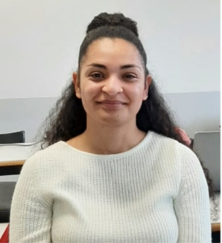
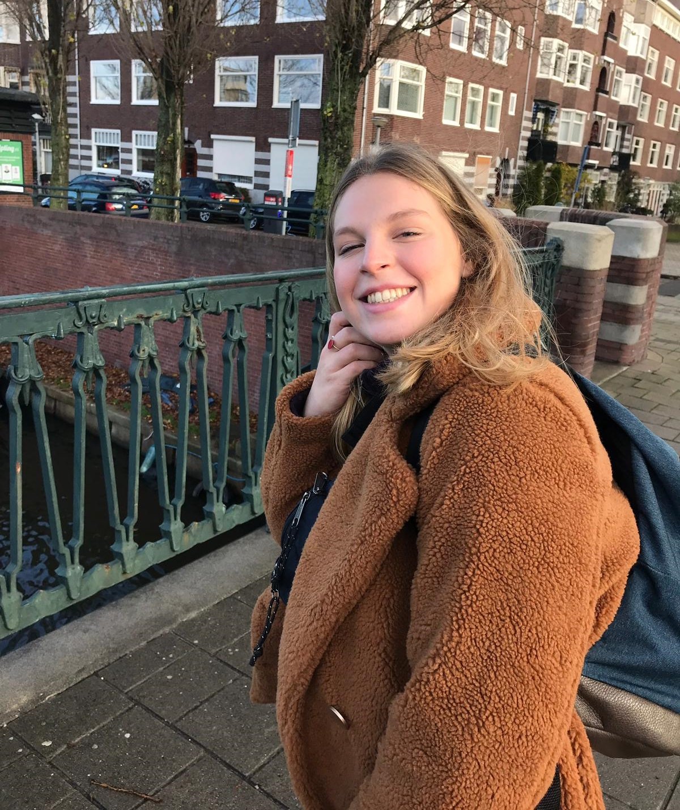
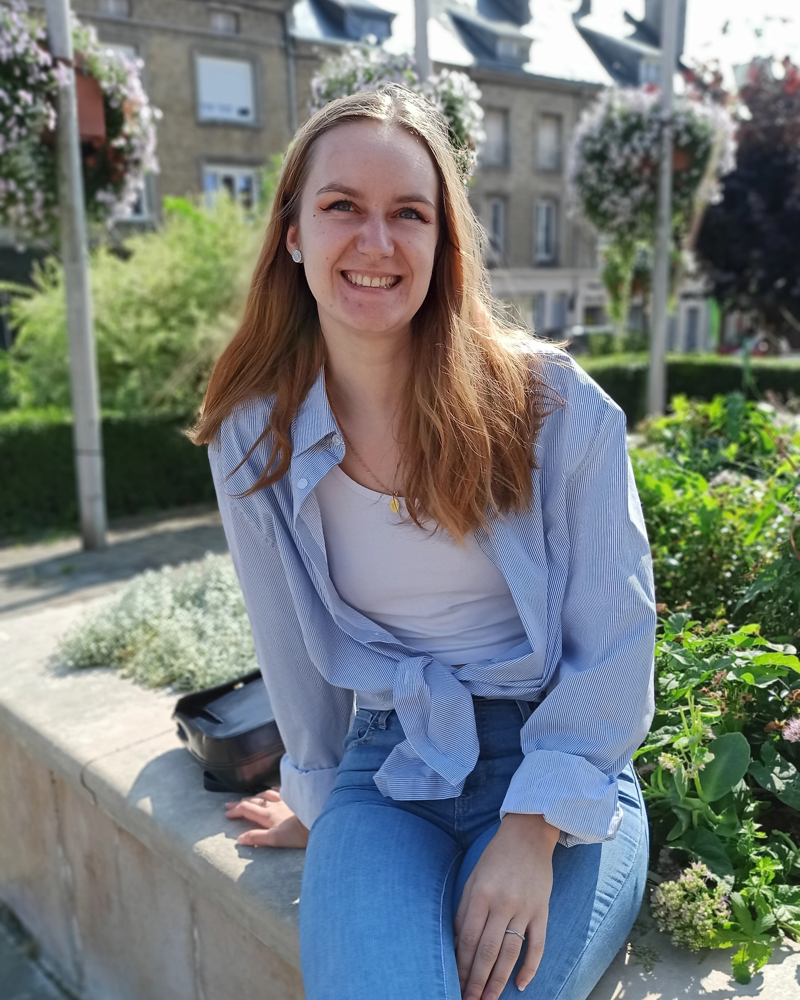

Aurélie Jandia |
Alexandra Courtaux |
Caroline Daneau |
||
|  |  |  | ||
24 ans J’ai dans un premier temps fait une licence en linguistique. C’est grâce à ce parcours que j’ai découvert le TAL. J’ai ensuite intégré le Master TAL de l’Université Paris Nanterre, ce qui m’a amené à réaliser ce projet avec mes camarades. |
21 ans Après une licence LLCER russe à l'INALCO, j'ai intégré le master TAL. J'ai choisi en M2 le parcours Ingénierie Linguistique à Nanterre et je suis infolinguiste en alternance infolinguiste au Crédit Agricole pour 1 an. |
23 ans J'ai fait une licence de Sciences du Langage, qui m'a ensuite menée vers le master TAL à Nanterre. Ma langue maternelle est le français, je parle également anglais et j'ai des notions d'allemand. |